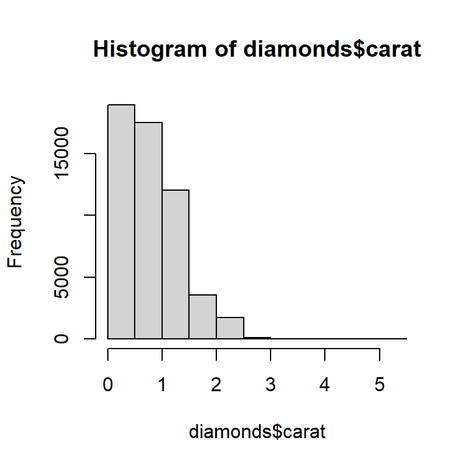
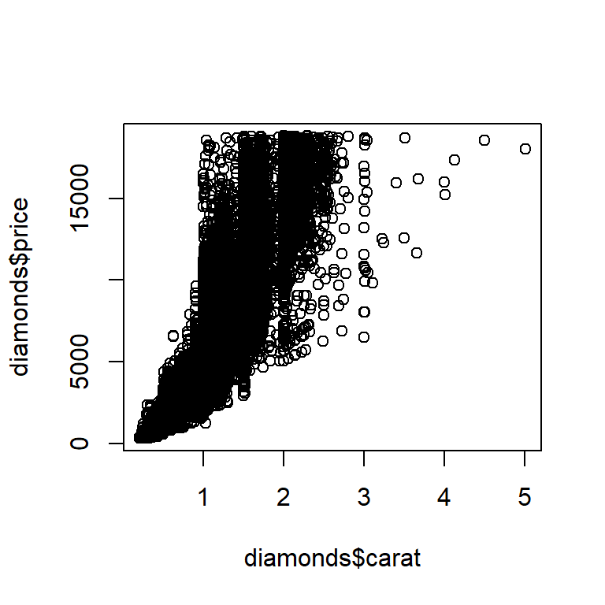

library(tidyverse)28 A field guide to base R
You are reading the work-in-progress second edition of R for Data Science. This chapter is largely complete and just needs final proof reading. You can find the complete first edition at https://r4ds.had.co.nz.
28.1 Introduction
To finish off the programming section, we’re going to give you a quick tour of the most important base R functions that we don’t otherwise discuss in the book. These tools are particularly useful as you do more programming and will help you read code you’ll encounter in the wild.
This is a good place to remind you that the tidyverse is not the only way to solve data science problems. We teach the tidyverse in this book because tidyverse packages share a common design philosophy, increasing the consistency across functions, and making each new function or package a little easier to learn and use. It’s not possible to use the tidyverse without using base R, so we’ve actually already taught you a lot of base R functions: from library() to load packages, to sum() and mean() for numeric summaries, to the factor, date, and POSIXct data types, and of course all the basic operators like +, -, /, *, |, &, and !. What we haven’t focused on so far is base R workflows, so we will highlight a few of those in this chapter.
After you read this book, you’ll learn other approaches to the same problems using base R, data.table, and other packages. You’ll undoubtedly encounter these other approaches when you start reading R code written by others, particularly if you’re using StackOverflow. It’s 100% okay to write code that uses a mix of approaches, and don’t let anyone tell you otherwise!
In this chapter, we’ll focus on four big topics: subsetting with [, subsetting with [[ and $, the apply family of functions, and for loops. To finish off, we’ll briefly discuss two essential plotting functions.
28.1.1 Prerequisites
This package focuses on base R so doesn’t have any real prerequisites, but we’ll load the tidyverse in order to explain some of the differences.
28.2 Selecting multiple elements with [
[ is used to extract sub-components from vectors and data frames, and is called like x[i] or x[i, j]. In this section, we’ll introduce you to the power of [, first showing you how you can use it with vectors, then how the same principles extend in a straightforward way to two-dimensional (2d) structures like data frames. We’ll then help you cement that knowledge by showing how various dplyr verbs are special cases of [.
28.2.1 Subsetting vectors
There are five main types of things that you can subset a vector with, i.e., that can be the i in x[i]:
A vector of positive integers. Subsetting with positive integers keeps the elements at those positions:
x <- c("one", "two", "three", "four", "five") x[c(3, 2, 5)] #> [1] "three" "two" "five"By repeating a position, you can actually make a longer output than input, making the term “subsetting” a bit of a misnomer.
x[c(1, 1, 5, 5, 5, 2)] #> [1] "one" "one" "five" "five" "five" "two"A vector of negative integers. Negative values drop the elements at the specified positions:
x[c(-1, -3, -5)] #> [1] "two" "four"A logical vector. Subsetting with a logical vector keeps all values corresponding to a
TRUEvalue. This is most often useful in conjunction with the comparison functions.x <- c(10, 3, NA, 5, 8, 1, NA) # All non-missing values of x x[!is.na(x)] #> [1] 10 3 5 8 1 # All even (or missing!) values of x x[x %% 2 == 0] #> [1] 10 NA 8 NAUnlike
filter(),NAindices will be included in the output asNAs.A character vector. If you have a named vector, you can subset it with a character vector:
x <- c(abc = 1, def = 2, xyz = 5) x[c("xyz", "def")] #> xyz def #> 5 2As with subsetting with positive integers, you can use a character vector to duplicate individual entries.
Nothing. The final type of subsetting is nothing,
x[], which returns the completex. This is not useful for subsetting vectors, but as we’ll see shortly, it is useful when subsetting 2d structures like tibbles.
28.2.2 Subsetting data frames
There are quite a few different ways1 that you can use [ with a data frame, but the most important way is to select rows and columns independently with df[rows, cols]. Here rows and cols are vectors as described above. For example, df[rows, ] and df[, cols] select just rows or just columns, using the empty subset to preserve the other dimension.
Here are a couple of examples:
df <- tibble(
x = 1:3,
y = c("a", "e", "f"),
z = runif(3)
)
# Select first row and second column
df[1, 2]
#> # A tibble: 1 × 1
#> y
#> <chr>
#> 1 a
# Select all rows and columns x and y
df[, c("x" , "y")]
#> # A tibble: 3 × 2
#> x y
#> <int> <chr>
#> 1 1 a
#> 2 2 e
#> 3 3 f
# Select rows where `x` is greater than 1 and all columns
df[df$x > 1, ]
#> # A tibble: 2 × 3
#> x y z
#> <int> <chr> <dbl>
#> 1 2 e 0.834
#> 2 3 f 0.601We’ll come back to $ shortly, but you should be able to guess what df$x does from the context: it extracts the x variable from df. We need to use it here because [ doesn’t use tidy evaluation, so you need to be explicit about the source of the x variable.
There’s an important difference between tibbles and data frames when it comes to [. In this book, we’ve mainly used tibbles, which are data frames, but they tweak some behaviors to make your life a little easier. In most places, you can use “tibble” and “data frame” interchangeably, so when we want to draw particular attention to R’s built-in data frame, we’ll write data.frame. If df is a data.frame, then df[, cols] will return a vector if col selects a single column and a data frame if it selects more than one column. If df is a tibble, then [ will always return a tibble.
df1 <- data.frame(x = 1:3)
df1[, "x"]
#> [1] 1 2 3
df2 <- tibble(x = 1:3)
df2[, "x"]
#> # A tibble: 3 × 1
#> x
#> <int>
#> 1 1
#> 2 2
#> 3 3One way to avoid this ambiguity with data.frames is to explicitly specify drop = FALSE:
df1[, "x" , drop = FALSE]
#> x
#> 1 1
#> 2 2
#> 3 328.2.3 dplyr equivalents
Several dplyr verbs are special cases of [:
filter()is equivalent to subsetting the rows with a logical vector, taking care to exclude missing values:df <- tibble( x = c(2, 3, 1, 1, NA), y = letters[1:5], z = runif(5) ) df |> filter(x > 1) # same as df[!is.na(df$x) & df$x > 1, ]Another common technique in the wild is to use
which()for its side-effect of dropping missing values:df[which(df$x > 1), ].arrange()is equivalent to subsetting the rows with an integer vector, usually created withorder():df |> arrange(x, y) # same as df[order(df$x, df$y), ]You can use
order(decreasing = TRUE)to sort all columns in descending order or-rank(col)to sort columns in decreasing order individually.Both
select()andrelocate()are similar to subsetting the columns with a character vector:df |> select(x, z) # same as df[, c("x", "z")]
Base R also provides a function that combines the features of filter() and select()2 called subset():
df |>
filter(x > 1) |>
select(y, z)
#> # A tibble: 2 × 2
#> y z
#> <chr> <dbl>
#> 1 a 0.157
#> 2 b 0.00740# same as
df |> subset(x > 1, c(y, z))This function was the inspiration for much of dplyr’s syntax.
28.2.4 Exercises
Create functions that take a vector as input and return:
- The elements at even-numbered positions.
- Every element except the last value.
- Only even values (and no missing values).
Why is
x[-which(x > 0)]not the same asx[x <= 0]? Read the documentation forwhich()and do some experiments to figure it out.
28.3 Selecting a single element with $ and [[
[, which selects many elements, is paired with [[ and $, which extract a single element. In this section, we’ll show you how to use [[ and $ to pull columns out of data frames, discuss a couple more differences between data.frames and tibbles, and emphasize some important differences between [ and [[ when used with lists.
28.3.1 Data frames
[[ and $ can be used to extract columns out of a data frame. [[ can access by position or by name, and $ is specialized for access by name:
tb <- tibble(
x = 1:4,
y = c(10, 4, 1, 21)
)
# by position
tb[[1]]
#> [1] 1 2 3 4
# by name
tb[["x"]]
#> [1] 1 2 3 4
tb$x
#> [1] 1 2 3 4They can also be used to create new columns, the base R equivalent of mutate():
tb$z <- tb$x + tb$y
tb
#> # A tibble: 4 × 3
#> x y z
#> <int> <dbl> <dbl>
#> 1 1 10 11
#> 2 2 4 6
#> 3 3 1 4
#> 4 4 21 25There are several other base R approaches to creating new columns including with transform(), with(), and within(). Hadley collected a few examples at https://gist.github.com/hadley/1986a273e384fb2d4d752c18ed71bedf.
Using $ directly is convenient when performing quick summaries. For example, if you just want to find the size of the biggest diamond or the possible values of cut, there’s no need to use summarize():
max(diamonds$carat)
#> [1] 5.01
levels(diamonds$cut)
#> [1] "Fair" "Good" "Very Good" "Premium" "Ideal"dplyr also provides an equivalent to [[/$ that we didn’t mention in Chapter 4: pull(). pull() takes either a variable name or variable position and returns just that column. That means we could rewrite the above code to use the pipe:
diamonds |> pull(carat) |> mean()
#> [1] 0.7979397
diamonds |> pull(cut) |> levels()
#> [1] "Fair" "Good" "Very Good" "Premium" "Ideal"28.3.2 Tibbles
There are a couple of important differences between tibbles and base data.frames when it comes to $. Data frames match the prefix of any variable names (so-called partial matching) and don’t complain if a column doesn’t exist:
df <- data.frame(x1 = 1)
df$x
#> [1] 1
df$z
#> NULLTibbles are more strict: they only ever match variable names exactly and they will generate a warning if the column you are trying to access doesn’t exist:
tb <- tibble(x1 = 1)
tb$x
#> Warning: Unknown or uninitialised column: `x`.
#> NULL
tb$z
#> Warning: Unknown or uninitialised column: `z`.
#> NULLFor this reason we sometimes joke that tibbles are lazy and surly: they do less and complain more.
28.3.3 Lists
[[ and $ are also really important for working with lists, and it’s important to understand how they differ from [. Let’s illustrate the differences with a list named l:
l <- list(
a = 1:3,
b = "a string",
c = pi,
d = list(-1, -5)
)[extracts a sub-list. It doesn’t matter how many elements you extract, the result will always be a list.str(l[1:2]) #> List of 2 #> $ a: int [1:3] 1 2 3 #> $ b: chr "a string" str(l[1]) #> List of 1 #> $ a: int [1:3] 1 2 3 str(l[4]) #> List of 1 #> $ d:List of 2 #> ..$ : num -1 #> ..$ : num -5Like with vectors, you can subset with a logical, integer, or character vector.
[[and$extract a single component from a list. They remove a level of hierarchy from the list.str(l[[1]]) #> int [1:3] 1 2 3 str(l[[4]]) #> List of 2 #> $ : num -1 #> $ : num -5 str(l$a) #> int [1:3] 1 2 3
The difference between [ and [[ is particularly important for lists because [[ drills down into the list while [ returns a new, smaller list. To help you remember the difference, take a look at the unusual pepper shaker shown in Figure 28.1. If this pepper shaker is your list pepper, then, pepper[1] is a pepper shaker containing a single pepper packet. pepper[2] would look the same, but would contain the second packet. pepper[1:2] would be a pepper shaker containing two pepper packets. pepper[[1]] would extract the pepper packet itself.

pepper[1]. (Right) pepper[[1]]This same principle applies when you use 1d [ with a data frame: df["x"] returns a one-column data frame and df[["x"]] returns a vector.
28.3.4 Exercises
What happens when you use
[[with a positive integer that’s bigger than the length of the vector? What happens when you subset with a name that doesn’t exist?What would
pepper[[1]][1]be? What aboutpepper[[1]][[1]]?
28.4 Apply family
In Chapter 27, you learned tidyverse techniques for iteration like dplyr::across() and the map family of functions. In this section, you’ll learn about their base equivalents, the apply family. In this context apply and map are synonyms because another way of saying “map a function over each element of a vector” is “apply a function over each element of a vector”. Here we’ll give you a quick overview of this family so you can recognize them in the wild.
The most important member of this family is lapply(), which is very similar to purrr::map()3. In fact, because we haven’t used any of map()’s more advanced features, you can replace every map() call in Chapter 27 with lapply().
There’s no exact base R equivalent to across() but you can get close by using [ with lapply(). This works because under the hood, data frames are lists of columns, so calling lapply() on a data frame applies the function to each column.
df <- tibble(a = 1, b = 2, c = "a", d = "b", e = 4)
# First find numeric columns
num_cols <- sapply(df, is.numeric)
num_cols
#> a b c d e
#> TRUE TRUE FALSE FALSE TRUE
# Then transform each column with lapply() then replace the original values
df[, num_cols] <- lapply(df[, num_cols, drop = FALSE], \(x) x * 2)
df
#> # A tibble: 1 × 5
#> a b c d e
#> <dbl> <dbl> <chr> <chr> <dbl>
#> 1 2 4 a b 8The code above uses a new function, sapply(). It’s similar to lapply() but it always tries to simplify the result, hence the s in its name, here producing a logical vector instead of a list. We don’t recommend using it for programming, because the simplification can fail and give you an unexpected type, but it’s usually fine for interactive use. purrr has a similar function called map_vec() that we didn’t mention in Chapter 27.
Base R provides a stricter version of sapply() called vapply(), short for vector apply. It takes an additional argument that specifies the expected type, ensuring that simplification occurs the same way regardless of the input. For example, we could replace the sapply() call above with this vapply() where we specify that we expect is.numeric() to return a logical vector of length 1:
vapply(df, is.numeric, logical(1))
#> a b c d e
#> TRUE TRUE FALSE FALSE TRUEThe distinction between sapply() and vapply() is really important when they’re inside a function (because it makes a big difference to the function’s robustness to unusual inputs), but it doesn’t usually matter in data analysis.
Another important member of the apply family is tapply() which computes a single grouped summary:
diamonds |>
group_by(cut) |>
summarize(price = mean(price))
#> # A tibble: 5 × 2
#> cut price
#> <ord> <dbl>
#> 1 Fair 4359.
#> 2 Good 3929.
#> 3 Very Good 3982.
#> 4 Premium 4584.
#> 5 Ideal 3458.
tapply(diamonds$price, diamonds$cut, mean)
#> Fair Good Very Good Premium Ideal
#> 4358.758 3928.864 3981.760 4584.258 3457.542Unfortunately tapply() returns its results in a named vector which requires some gymnastics if you want to collect multiple summaries and grouping variables into a data frame (it’s certainly possible to not do this and just work with free floating vectors, but in our experience that just delays the work). If you want to see how you might use tapply() or other base techniques to perform other grouped summaries, Hadley has collected a few techniques in a gist.
The final member of the apply family is the titular apply(), which works with matrices and arrays. In particular, watch out for apply(df, 2, something), which is a slow and potentially dangerous way of doing lapply(df, something). This rarely comes up in data science because we usually work with data frames and not matrices.
28.5 for loops
for loops are the fundamental building block of iteration that both the apply and map families use under the hood. for loops are powerful and general tools that are important to learn as you become a more experienced R programmer. The basic structure of a for loop looks like this:
for (element in vector) {
# do something with element
}The most straightforward use of for loops is to achieve the same effect as walk(): call some function with a side-effect on each element of a list. For example, in Section 27.4.1 instead of using walk():
paths |> walk(append_file)We could have used a for loop:
for (path in paths) {
append_file(path)
}Things get a little trickier if you want to save the output of the for loop, for example reading all of the excel files in a directory like we did in Chapter 27:
paths <- dir("data/gapminder", pattern = "\\.xlsx$", full.names = TRUE)
files <- map(paths, readxl::read_excel)There are a few different techniques that you can use, but we recommend being explicit about what the output is going to look like upfront. In this case, we’re going to want a list the same length as paths, which we can create with vector():
files <- vector("list", length(paths))Then instead of iterating over the elements of paths, we’ll iterate over their indices, using seq_along() to generate one index for each element of paths:
seq_along(paths)
#> [1] 1 2 3 4 5 6 7 8 9 10 11 12Using the indices is important because it allows us to link to each position in the input with the corresponding position in the output:
for (i in seq_along(paths)) {
files[[i]] <- readxl::read_excel(paths[[i]])
}To combine the list of tibbles into a single tibble you can use do.call() + rbind():
do.call(rbind, files)
#> # A tibble: 1,704 × 5
#> country continent lifeExp pop gdpPercap
#> <chr> <chr> <dbl> <dbl> <dbl>
#> 1 Afghanistan Asia 28.8 8425333 779.
#> 2 Albania Europe 55.2 1282697 1601.
#> 3 Algeria Africa 43.1 9279525 2449.
#> 4 Angola Africa 30.0 4232095 3521.
#> 5 Argentina Americas 62.5 17876956 5911.
#> 6 Australia Oceania 69.1 8691212 10040.
#> # ℹ 1,698 more rowsRather than making a list and saving the results as we go, a simpler approach is to build up the data frame piece-by-piece:
out <- NULL
for (path in paths) {
out <- rbind(out, readxl::read_excel(path))
}We recommend avoiding this pattern because it can become very slow when the vector is very long. This is the source of the persistent canard that for loops are slow: they’re not, but iteratively growing a vector is.
28.6 Plots
Many R users who don’t otherwise use the tidyverse prefer ggplot2 for plotting due to helpful features like sensible defaults, automatic legends, and a modern look. However, base R plotting functions can still be useful because they’re so concise — it takes very little typing to do a basic exploratory plot.
There are two main types of base plot you’ll see in the wild: scatterplots and histograms, produced with plot() and hist() respectively. Here’s a quick example from the diamonds dataset:
# Left
hist(diamonds$carat)
# Right
plot(diamonds$carat, diamonds$price)

Note that base plotting functions work with vectors, so you need to pull columns out of the data frame using $ or some other technique.
28.7 Summary
In this chapter, we’ve shown you a selection of base R functions useful for subsetting and iteration. Compared to approaches discussed elsewhere in the book, these functions tend to have more of a “vector” flavor than a “data frame” flavor because base R functions tend to take individual vectors, rather than a data frame and some column specification. This often makes life easier for programming and so becomes more important as you write more functions and begin to write your own packages.
This chapter concludes the programming section of the book. You’ve made a solid start on your journey to becoming not just a data scientist who uses R, but a data scientist who can program in R. We hope these chapters have sparked your interest in programming and that you’re looking forward to learning more outside of this book.
Read https://adv-r.hadley.nz/subsetting.html#subset-multiple to see how you can also subset a data frame like it is a 1d object and how you can subset it with a matrix.↩︎
But it doesn’t handle grouped data frames differently and it doesn’t support selection helper functions like
starts_with().↩︎It just lacks convenient features like progress bars and reporting which element caused the problem if there’s an error.↩︎